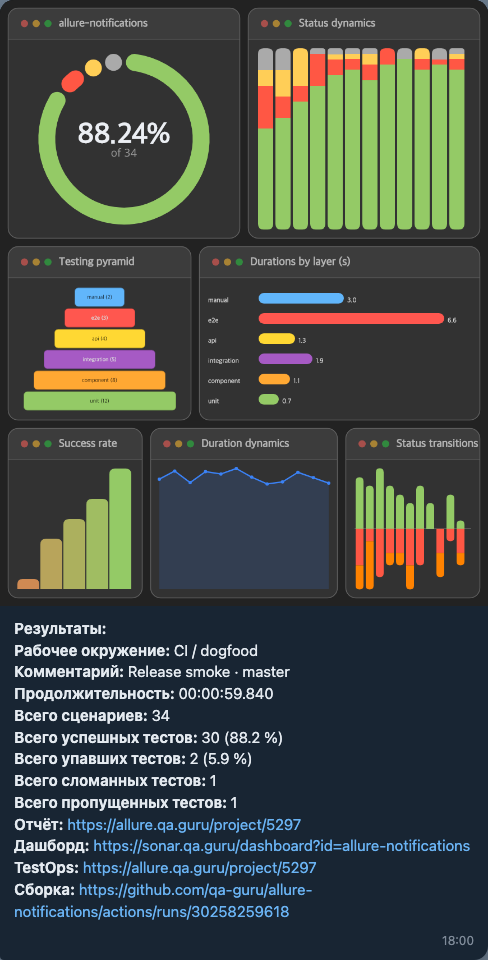

Allure notifications
Красивые уведомления о прогоне автотестов — прямо в мессенджер.
Collage PNG + текст со статистикой и ссылками. Соберите config.json в Config builder, отправьте через CLI на TypeScript 6.0.11.
Пример уведомления

| Зона | Что внутри |
|---|---|
| Collage | 7 панелей: pie · status dynamics · pyramid · durations · success rate · duration dynamics · status transitions |
| Текст | окружение, комментарий, duration, счётчики passed / failed / broken / skipped |
| Ссылки | report · dashboard · testops · build из base.links |
Omni-tool
(allure-notifications.qa.guru · qa-guru.github.io/allure-notifications)
1. Messengers
Нет вашего канала? Issue или PR.
2. Any CI
Работает везде, где есть Allure results — от ноутбука до hosted CI.
…и любой другой runner, который может выполнить CLI.
3. Any language with Allure
Адаптеры фреймворков → список на allurereport.org.
4. Notification locales
Нет вашей локали? Issue или PR.
en
de
fr
ru
by
ua
cn
cnt
morse
Содержание
+ TypeScript · Quick start + Config builder (ANB) + config.json + Мессенджеры + Визуальный канон + Плагин (альтернатива) + Legacy Java 5.0.8 + CI cookbook
TypeScript · Quick start
| Версия | Стек | Allure | Статус |
|---|---|---|---|
| 4.\* | Java | Allure 2 | Историческая |
| 5.\* | Java | Allure 3 | Legacy freeze на 5.0.8 (ветка legacy/java-5.0.8); версии 5.1 нет |
| 6.\* | TypeScript | Allure 3 | Продукт — pin 6.0.11 (CLI + builder + plugin) |
Патч-ноты → GitHub Releases · миграция → MIGRATION.md.
| Часть | Роль |
|---|---|
| CLI | npx @qa-guru/allure-notifications@6.0.11 send --config … — основной runtime |
| Collage PNG | @napi-rs/canvas в @qa-guru/allure-notifications-core (Playwright — только тесты) |
| Config builder | Web UI → полный config.json + free-layout collage — apps/builder/ |
| Пакеты | @qa-guru/allure-notifications-config · pyramid · core · bin allure-notifications · plugin @qa-guru/allure-notifications-plugin |
После тестов Allure пишет summary. CLI находит его автоматически:
- Allure 2 —
По summary строится текст уведомления. В режиме collage дополнительно читаются *-result.json из allureResultsFolder.
npx allure generate allure-results --clean -o allure-report
npx @qa-guru/allure-notifications@6.0.11 send --config config.json --live
| Флаг | Поведение |
|---|---|
--dry-run | Рендер collage; список мессенджеров без сети (PR / локально без секретов) |
--mock | Рендер collage; mock-доставки; без сети |
--live | Реальная отправка (Telegram при наличии credentials) |
--out | Записать collage PNG на диск |
Без --live / --mock по умолчанию безопасный dry-run.
Config builder (ANB)
Web UI: полный config.json (base · chart · links · messengers) + редактор free-layout collage.
| Prod | allure-notifications.qa.guru |
| Project Pages | qa-guru.github.io/allure-notifications |
| Исходники | apps/builder/ |
| Canon | apps/builder/CANON.md |

Установите как PWA (Add to Home Screen / Install) — offline shell и standalone-режим. На iPad Pro 13″ (landscape):

Canvas presets
| Preset | Размер | Заметки |
|---|---|---|
| SQ-1080 | 1080×1080 | Dense, квадратный canvas |
| CB-870 | 870×1080 | Canvas под Telegram (post cap 1024×1280) |
| WD-1410 | 1410×1080 | Широкий canvas |
Export → CLI
1. Раскладка панелей в builder → Export / Download config.json. 2. Укажите base.allureFolder / base.allureResultsFolder. 3. Заполните credentials мессенджера (или env-плейсхолдеры). 4. Отправка:
npx @qa-guru/allure-notifications@6.0.11 send --config <exported>.json
config.json
Схема: packages/config (zod). Удобнее всего Export из Config builder.
Минимальный пример 6.0 — collage + free + один мессенджер:
{
"base": {
"project": "my-project",
"environment": "ci",
"comment": "Release smoke · master",
"language": "ru",
"allureFolder": "allure-report/",
"allureResultsFolder": "allure-results/",
"enableChart": true,
"darkMode": true,
"chart": {
"mode": "collage",
"layout": "free",
"width": 870,
"height": 1080,
"headerHeight": 56,
"cardGap": 14,
"tilePad": 6,
"gridCols": 10,
"gridRows": 10,
"items": [
{ "type": "pie", "x": 0, "y": 0, "w": 5, "h": 4 },
{ "type": "statusDynamics", "x": 5, "y": 0, "w": 5, "h": 4 },
{ "type": "testingPyramid", "x": 0, "y": 4, "w": 4, "h": 3 },
{ "type": "durations", "x": 4, "y": 4, "w": 6, "h": 3, "groupBy": "layer" },
{ "type": "successRateDistribution", "x": 0, "y": 7, "w": 3, "h": 3 },
{ "type": "durationDynamics", "x": 3, "y": 7, "w": 4, "h": 3 },
{ "type": "statusTransitions", "x": 7, "y": 7, "w": 3, "h": 3 }
],
"pyramidFallback": "suites"
},
"links": {
"report": "${ALLURE_REPORT_URL}",
"dashboard": "${ALLURE_DASHBOARD_URL}",
"testops": "",
"build": "${BUILD_URL}"
}
},
"telegram": {
"token": "${TELEGRAM_BOT_TOKEN}",
"chat": "${TELEGRAM_CHAT_ID}",
"topic": "",
"templatePath": "/templates/telegram.ftl"
},
"proxy": {
"type": "socks5",
"host": "${PROXY_HOST}",
"port": 7777,
"username": "",
"password": ""
}
}
Showcase layout (7-tile readme-hero) = config/config.dogfood-telegram-full.json. SOCKS5-пример: config/config.proxy-socks5.example.json.
Поля base
| Поле | Заметки | ||
|---|---|---|---|
project, environment, comment | В тексте уведомления | ||
links | report, dashboard, testops, build — только непустые | ||
reportLink | Deprecated — используйте links.report (fallback ещё работает) | ||
language | en / de / fr / ru / ua / by / cn / cnt / morse | ||
allureFolder | Каталог сгенерированного отчёта Allure | ||
allureResultsFolder | Сырые allure-results (нужны для analytics collage) | ||
enableChart | Прикреплять изображение collage / chart | ||
chart.mode | collage (6.x TS only; legacy jar pie → ветка legacy/java-5.0.8) | ||
chart.layout | Основной путь — free + items. Legacy grid \ | stacked \ | row ещё поддерживаются |
chart.width / height | Размер canvas (px) | ||
chart.headerHeight / cardGap / tilePad | Chrome карточек (defaults builder: 22 / 14 / 6) | ||
darkMode | Тема chart | ||
enableSuitesPublishing | Статистика по suites из suites.json | ||
logo, durationFormat, customData | Опционально |
Мессенджеры
Оставьте base и только нужный блок мессенджера. Опциональный templatePath deprecated и игнорируется в 6.x (нет FreeMarker runtime).
Telegram — wiki: token, chat, опционально topic / replyTo.
Slack — wiki: token, chat, опционально replyTo.
Email — wiki: host, port, username, password, from, to, опционально cc / bcc / securityProtocol.
Mattermost — wiki: url, token, chat.
Discord
`botToken`, `channelId`. Developer mode → Discord developer portal → Applications → Bot token; ПКМ по каналу → Copy ID.Loop
`webhookUrl` — Integrations → Incoming Webhooks → создать webhook для канала.Rocket.Chat
`url`, `auth_token`, `user_id`, `channel`. Токен в настройках пользователя (там же `user_id`).Zoho Cliq
`token` (zapikey), `chat`, опционально `bot`, `dataCenter` (`com` / `eu` / `in` / `au` / `jp` / `ca`; default `eu`).Microsoft Teams
`webhookUrl` из шаблона Workflows *“Post to a channel when a webhook request is received”* (legacy Office 365 Connectors уходят). Chart — base64; payload ≤ 28 KB; throttle ~4 req/s.Top-level proxy (type: http \| socks5, host, port, опционально username / password) — исходящий HTTP/SOCKS, где поддерживается.
Визуальный канон
Правила collage и reference PNG: docs/canon/CANON.md.
Плагин (альтернатива)
Плагин Allure 3 — тонкая обёртка над тем же core. Основной путь — CLI.
npm add allure @qa-guru/allure-notifications-plugin@6.0.11
- Документация: packages/plugin/README.md - Пример: examples/allurerc.notifications.mjs - GitHub Actions: examples/github-actions/
Legacy Java 5.0.8
Только bugfix / security. Исходники на ветке legacy/java-5.0.8 (не в дереве master).
java -DconfigFile=notifications/config.json -jar allure-notifications-5.0.8.jar
Релиз: v5.0.8 · заметки 4.x → 5.0: docs/migration-5.0.md.
CI cookbook
docs/ci-cookbook.md · заметки эпохи jar: docs/ci-cookbook-5.0.md.